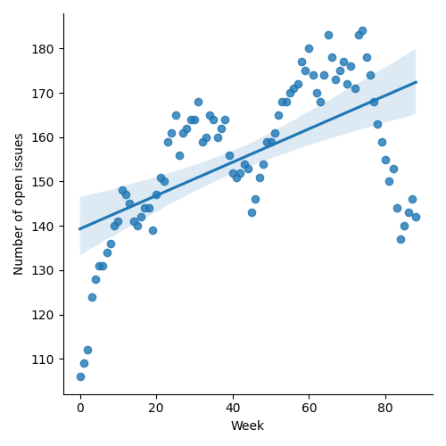
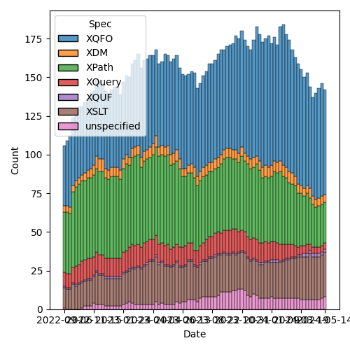
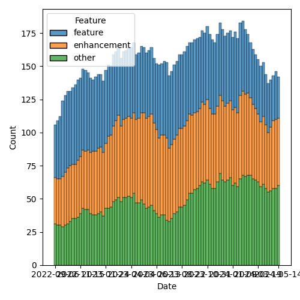

QT4 CG Meeting 078 Minutes 2024-05-21
Table of Contents
- Draft Minutes
- Summary of new and continuing actions
[2/8] - 1. Administrivia
- 2. XML Prague agenda preparation
- 3. Technical Agenda
- 3.1. PR #1117: 1116 Add options param to unparsed-text
- 3.2. PR #1197: 1192 Allow fn as abbreviation for function
- 3.3. PR #1191: 1167, 934 deep equal merge collations param
- 3.4. PR #1185: 1179 array:values, map:values → contents
- 3.5. PR #1062/#1027/#1227: fn:ranks
- 3.6. PR #1228: Adding the BLAKE3 hashing algorithm to fn:hash
- 3.7. PR #1219: 1218 Drop use of union(A,B) syntax
- 3.8. PR #1217: 1207 Allow numeric predicates when filtering arrays
- 3.9. PR #1213: 1199 Add ellipsis markup for arguments in variadic functions
- 3.10. PR #1212: 1208 correct details of formerly-reserved function names
- 3.11. PR #1211: QT4CG-076-01 Add examples of coercions
- 3.12. PR #1209: 1183 Add transient mode and the transient{} expression
- 4. Any other business
- 5. Adjourned
Meeting index / QT4CG.org / Dashboard / GH Issues / GH Pull Requests
Draft Minutes
Summary of new and continuing actions [2/8]
[ ]QT4CG-063-06: MK to consider refactoring the declare item type syntax to something like declare record[ ]QT4CG-071-06: NW to clarify the cases that are distinguished by the leading empty string in path segments[ ]QT4CG-072-03: NW to clarify the round-tripping of URIs[ ]QT4CG-077-03: MK to add a note about document order across documents[ ]QT4CG-077-04: MK to review inconsistencies discovered in review of #1117[ ]QT4CG-078-01: MK to make the default for normalize-newlines backwards compatible.[ ]QT4CG-078-02: MK to update the prose oftransient{}to use the word “should”.
1. Administrivia
1.1. Roll call [8/12]
RD, EP gives regrets. JLY gives regrets for three weeks.
[ ]Reece Dunn (RD)[X]Sasha Firsov (SF)[X]Christian Grün (CG)[ ]Joel Kalvesmaki (JK)[X]Michael Kay (MK)[X]Juri Leino (JLO)[ ]John Lumley (JLY)[X]Dimitre Novatchev (DN)[X]Wendell Piez (WP) [:15-][ ]Ed Porter (EP)[X]C. M. Sperberg-McQueen (MSM)[X]Norm Tovey-Walsh (NW). Scribe. Chair.
1.2. Accept the agenda
Proposal: Accept the agenda.
Accepted.
1.2.1. Status so far…

Figure 1: “Burn down” chart on open issues

Figure 2: Open issues by specification

Figure 3: Open issues by type
1.3. Approve minutes of the previous meeting
Proposal: Accept the minutes of the previous meeting.
Accepted.
1.4. Next meeting
The next meeting is scheduled for Tuesday, 28 May 2024.
MK gives regrets. JLY gives regrets for two more weeks.
1.5. Review of open action items [3/8]
[ ]QT4CG-063-06: MK to consider refactoring the declare item type syntax to something like declare record[ ]QT4CG-071-06: NW to clarify the cases that are distinguished by the leading empty string in path segments[ ]QT4CG-072-03: NW to clarify the round-tripping of URIs[X]QT4CG-073-01: NW to proceed with the records/options proposal and make a PR.[X]QT4CG-077-01: DN to create an issue for adding Blake-3.[X]QT4CG-077-02: JK to correct the reference to TR29.[ ]QT4CG-077-03: MK to add a note about document order across documents[ ]QT4CG-077-04: MK to review inconsistencies discovered in review of #1117
1.6. Review of open pull requests and issues
1.6.1. Merge without discussion
The following PRs are editorial, small, or otherwise appeared to be uncontroversial when the agenda was prepared. The chairs propose that these can be merged without discussion. If you think discussion is necessary, please say so.
- PR #1223: Minor: fixed URL
- PR #1222: 1214: hash examples
- PR #1220: 73 copy&paste typo in fn:graphemes (combining diaeresis should be ZWJ)
Proposal: Merge with discussion.
Accepted.
1.6.2. Close without action
It has been proposed that the following issues be closed without action. If you think discussion is necessary, please say so.
- Issue #652: Defining a common function library for XPath, XSLT, and XQuery applications
- Issue #116: Clarify the fn:transform function() wrt multiple top-level elements
Proposal: Close without action.
Accepted.
2. XML Prague agenda preparation
- Reminder, who will be there?
- MK, JLO, RD, …
- What do we want to accomplish?
- MK: Classify open issues and make a decision about how radical we want to be
in terms of closing the ones deemed inessential
- Must/Nice/Never!
- What do with “nice to haves”
- MK: Second, a few issues we aren’t going to solve without talking about them
- Nice to have a feel about whether we think we can solve those
- Do some whiteboarding…
- MK: Classify open issues and make a decision about how radical we want to be
in terms of closing the ones deemed inessential
- Scheduling?
- We know some folks won’t be able to attend, I propose that we schedule an
hour Zoom call at the end of the day for anyone not present who wants to
discuss what we’ve decided. Perhaps scheduled at the usual time of
17:00CEST (16:00BST, 15:00GMT, 11:00EDT)?
- If so, do we want to meet from 09:00-18:00 or 10:00-18:00 local time?
- We know some folks won’t be able to attend, I propose that we schedule an
hour Zoom call at the end of the day for anyone not present who wants to
discuss what we’ve decided. Perhaps scheduled at the usual time of
17:00CEST (16:00BST, 15:00GMT, 11:00EDT)?
- MSM: My gut feeling is that if the network will support it, it would be probably be more convenient if everyone entered the zoom call.
- NW: Should we start at 09:00 or 10:00?
Silence.
- NW: Then we’ll start at 09:00!
3. Technical Agenda
It would be nice to pick off the low-hanging fruit first in preparation for the face-to-face. I suggest we take the issues in turn, but begin by estimating if we believe we can close the issue in 10 minutes. If not, move on to the next. After we’ve processed all the “easy” ones, we can loop back around to what’s left.
3.1. PR #1117: 1116 Add options param to unparsed-text
See PR #1117
- MK: We have the choice of specifying an encoding or an options map.
- … Some confusion about how that worked in unparsed-text-lines
- … I think that’s now sorted out.
- CG: The XQuery code for unparsed-text-lines is wrong
- MK: I think that’s now okay.
Proposal: accept this PR.
Accepted.
(We return to this following a question by CG)
- CG: In 3.1, different newline characters are allowed and automatically normalized
- … Shall we change the default to “true” so that we’re backwards compatible?
- MSM: 👍
- MK: Thanks for spotting that.
ACTION: QT4CG-078-01: MK to make the default for normalize-newlines on unparsed-text.
3.2. PR #1197: 1192 Allow fn as abbreviation for function
See PR #1197.
- MK: We already have
fnas an abbreviation in inline functions.- … This just allows it in normal function declarations.
Proposal: accept this PR.
Accepted.
3.3. PR #1191: 1167, 934 deep equal merge collations param
See PR #1191.
- MK: This is doing the same kind of thing with the options parameter
(CG projects for MK)
- MK: Instead of a collation parameter and an options parameter, they’re combined
Proposal: accept this PR.
Accepted.
3.4. PR #1185: 1179 array:values, map:values → contents
See PR #1185.
Skipped on first triage pass.
3.5. PR #1062/#1027/#1227: fn:ranks
3.6. PR #1228: Adding the BLAKE3 hashing algorithm to fn:hash
See PR #1228
- MK: I have no objection, but that’s from a position of ignorance as to which ones are important enough. It’s a judgement call.
- WP: Not an expert on hashing algorithms, but in the context of what people are doing is how do things get added or removed from this list.
- NW: You can support any you want, this is about what’s in the standard.
- CG: I have no objection, but what if there are others that could be added? Why is this one more important?
- JLO: As long as there decent Blake3 implementations, then I think there’s no problem. I was hoping for HMAC, for example.
- DN: Why this one? With this one, we have five. CRC32 and MD5 should be
uncontroversial. SHA1 and SHA256, which are known to have security exploits.
Blake3 is the only one without exploits.
- … Finally, I think five is the perfect number. And I think we should do it.
- CG projects rurban.github.io/smhasher/doc/table.html showing that there are many faster algorithms.
- DN: There are implementations already in Java, C#, and Rust.
- NW: That’s true of many, many algorithms. Adding a dependency isn’ty free.
- CG: I would like to discuss if further.
We’ll continue discussion of this item. Please comment on the issue or in email.
3.7. PR #1219: 1218 Drop use of union(A,B) syntax
See PR #1219
- MK: It’s purely editorial, there are places where it still appears in examples and it’s incorrect.
Proposal: accept this PR.
Accepted.
3.8. PR #1217: 1207 Allow numeric predicates when filtering arrays
See PR #1217
- MK: I resisted this initially, but CG was persuasive.
- … My main reservation was what do you want back for
[1]on an array? - … Now that you can have multiple numbers, it makes sense to return an array.
- … The implementation required generalizing the
predicate truth valueand referring to it. - … You can also use it on maps which is probably useless, but logically consistent.
- … My main reservation was what do you want back for
Proposal: accept this PR.
Accepted.
3.9. PR #1213: 1199 Add ellipsis markup for arguments in variadic functions
See PR #1213
- MK: Displays the way the signature of a variadic function is displays.
Proposal: accept this PR.
Accepted.
3.10. PR #1212: 1208 correct details of formerly-reserved function names
See PR #1212
- MK: This corrects the history and justification. It’s purely editorial.
Proposal: accept this PR.
Accepted.
3.11. PR #1211: QT4CG-076-01 Add examples of coercions
See PR #1211
- MK: This just adds some examples.
- CG: I noticed some issues in union and choice types, but they’ve been corrected.
Proposal: accept this PR.
Accepted.
3.12. PR #1209: 1183 Add transient mode and the transient{} expression
See PR #1209
- MK: I’ve tried to remove all the controversy from the discussion.
- … This adds a new expression,
transient {}which sets the static context to transient mode. - … This relaxes the implementation requirements for functions like
current-dateTime,doc, etc. so that they are not required to be stable. - … No obligation on the implementation to do anything different, but it is allowed to relax the requirement to deliver the same results every time.
- … There’s a recommendation about functions that might particularly benefit from this treatment.
- … This is basically implementation-defined territory.
- … This adds a new expression,
- DN: I’m wondering who would use this and why if implementations are not required to return different results every time? If users can’t know what will happen, why should they use it?
- MK: If you take the collection function, an implementation of the function
that access the filestore, the requirement to make the collection stable is
quite expensive.
- … People are currently using proprietary extensions to say they want versions of the function that doesn’t incur the overhead.
- … This provides a declarative way to address that common use case.
- … Users might do this if they know their implementations will use it.
- DN: My concern is that if this not an obligation on implementations to change their behavior, they won’t change it.
- MK: That’s a valid concern given that the
unorderedexpression is very rarely used. Most users want results ordered most of the time.- … You can’t force an implementation to return different results.
- … We can’t formally model changes in the external environment.
Some discussion of what it means to observe the external. Some discussion of whether we should use the word “should”.
- NW: I think you underestimate how responsive implementors are to customers.
- JLO: I think
fn:random-number-generatorcould be added to this list. That would make it more approachable by just returning a different value each time it’s called.- … I’m also wondering if it’s implementation-defined that a function like
current-dateTimemust return different values. It could be really problematic if an implementation returns the same value.
- … I’m also wondering if it’s implementation-defined that a function like
- MK: It’s just hard to predict the outside world, you can’t for example, determine whether or not caching will happen in the network.
- MSM: I wanted to say on the issue of encouraged-but-not-required-to versus should, “should” has a defined meaning in conformance. I think that would be a better choice here. And consistency helps readers.
- MK: Okay.
- WP: I think I agree with that. It’s a question of whether this should be in the specification or should be implementation behavior. It looks like a useful thing to have a standard way to say.
ACTION: QT4CG-078-02: MK to update the prose to use the word “should”.
- CG: My concerns are similar to DN’s. I have some doubt that implementors will
do sufficiently consistent things. Maybe we could try to make it a little
clearer what changes should be expected. For time measurements we already have
another issue about that.
- … One example is file append. That function is identified as
non-deterministic so I wouldn’t expect
transient{}to change anything.
- … One example is file append. That function is identified as
non-deterministic so I wouldn’t expect
- MK: There’s no determinism required by the specification for file append.
Some discussion of when an implementation might “know” that a function was nondeterministic. (Annotations or other API choices, perhaps.)
- CG: I’m not sure who would find this advantageous.
- … What happens when a function is invoked through a function pointer, etc.
- MK: I’ve made it part of the static context. That would make it part of the context when the function is created, not invoked.
We’ll continue discussion of this item. Please comment on the PR or in email.
4. Any other business
- NW: Shall I merge my PR for record descriptions?
Some discussion. General agreement that I should.
- DN: Do we have a final description of the record type and all it’s features?
- … I’d like to rewrite a couple of features using record types, but are they ready?
- … And are there any implementations that support records?
- MK: Records are pretty stable in the specification except possibly for edge
cases involving recursive record types.
- … There’s been a stable implementation Saxon for a while
- MK: On the public 12.x branch, we’ve stopped adding 4.0 features. We’re doing the work on the 13 branch which isn’t publicly available.